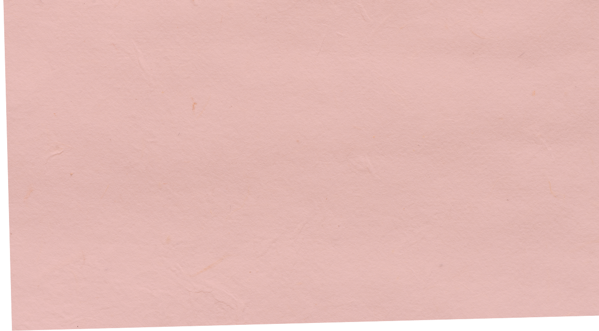
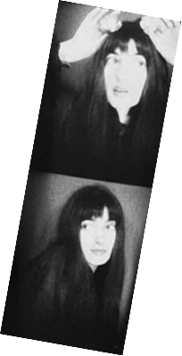
Тренд main character предлагает воспринимать жизнь как кино, превращая повседневность в череду кинематографичных моментов в мире, где многое кажется неподконтрольным, это помогает вернуть ощущение участия в собственной жизни и самостоятельно выбирать, чему придавать значение.
Лонгрид рассказывает о девушке, которая на один день становится главной героиней своей жизни. Сопоставляя повседневность со сценами из кино, она замечает истории, прежде остававшиеся незамеченными.
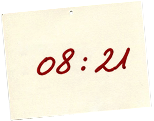
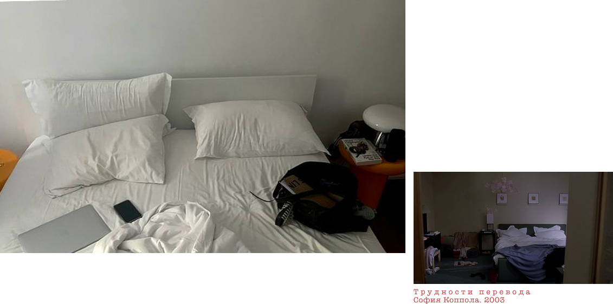
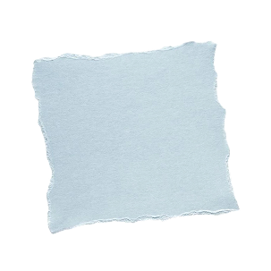
Иногда мне кажется, что моя комната знает обо мне больше, чем я сама. Свет пробирается сквозь узкое окно, падает на смятую постель, на подушки, которые я опять не убрала. Всё выглядит так, будто я ненадолго вышла, хотя на самом деле я просто проснулась и пока не придумала, зачем вставать.
Я смотрю на эту комнату и почему-то вспоминаю «Трудности перевода» Софии Копполы. Вроде бы я нахожусь в своей жизни, но как будто немного в стороне от неё, есть что-то знакомое.
Наверное, я просто слишком долго лежу и смотрю по сторонам. Но мне нравится думать, что это тоже сцена. Героиня просыпается в своей комнате, смотрит на свет и не знает, что делать дальше.
И всё же это моя комната. Мой свет, моё утро, моя жизнь. Может быть, мне не обязательно прямо сейчас придумывать, куда всё должно двигаться. Можно просто немного полежать и заметить, как начинается день.
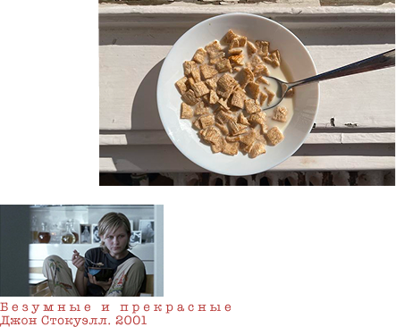
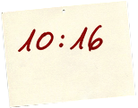
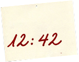
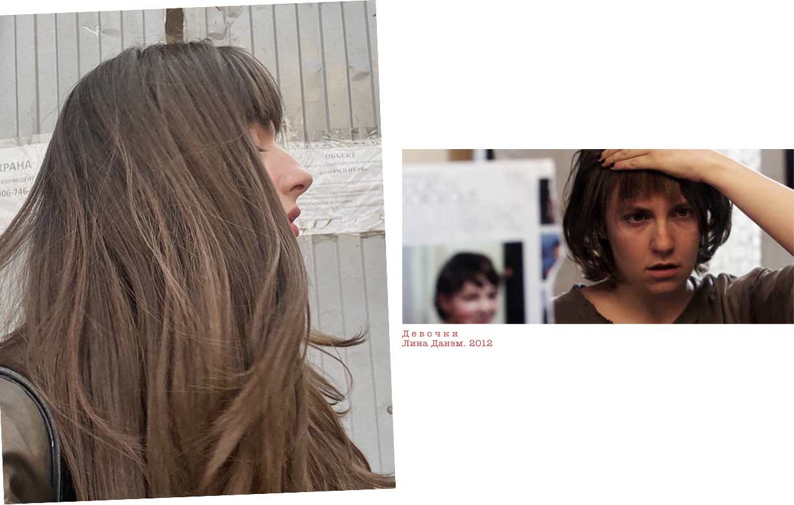
Сегодня я отрезала чёлку. Думала об этом уже несколько недель, а сделала почему-то именно сегодня утром, когда собиралась заниматься совсем другими делами.
Первые минут десять я была уверена, что совершила ошибку. Потом высушила волосы, посмотрела на себя ещё раз и вспомнила Ханну. У неё была почти такая же — немного неровная, не очень аккуратная и совсем не похожая на те чёлки, которые сохраняешь в папку с референсами перед походом в парикмахерскую.
Я уже сто раз посмотрела на себя во все зеркала в квартире. Иногда мне очень нравится. Иногда хочется срочно найти заколки и сделать вид, что ничего не произошло. Кажется, в этом и есть что-то хорошее. Утром я проснулась такой же, как вчера, а из дома выйду уже с новой чёлкой. Маленькое изменение, о котором никто на улице даже не узнает.
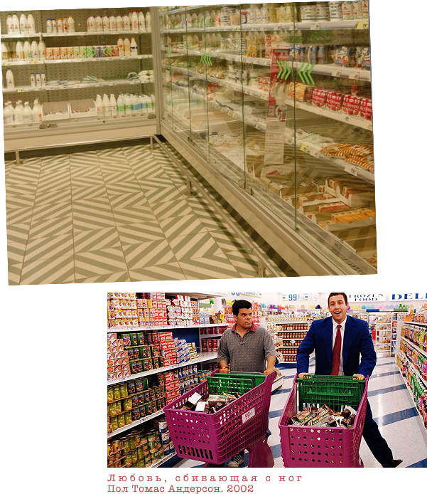
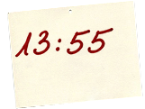
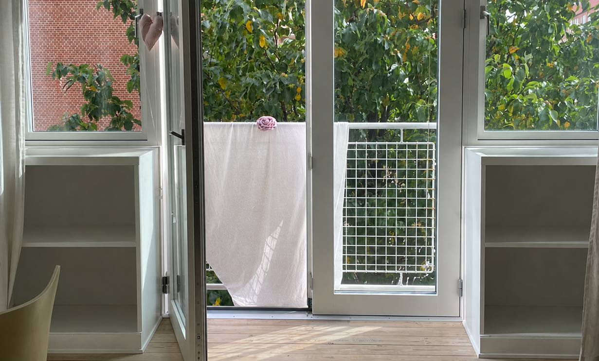
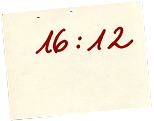
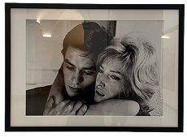
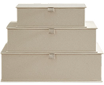
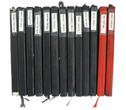
В кино всё проще. Персонажа сразу считываешь по деталям. Если бы меня нужно было описать через вещи в комнате, это были бы они.
Стопка альбомов по искусству на полке, а сверху фейковая сумка фенди с розовой застёжкой. Я вдохновилась Самантой из любимого сериала. В самом низу мои многочисленные дневники, исписанные от корки до корки. Сухие розы в вазе у самого окна, подаренные самой себе давным-давно. Справа из-за стекла рамки смотрит любимая Моника Вити. Чуть ниже старая видеокамера и коробки с касетами. В самом низу розовые туфли на каблуке, которые так и ждут своего особого случая. За балконной дверью третий день сушится простынь.
Случайные вещи, которые просто оказались рядом и я не придавала им никакого значения. Наверное именно по ним будут составлять портрет моей героини.
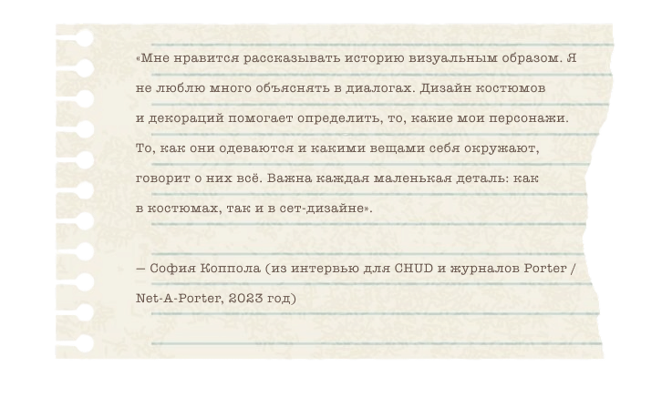
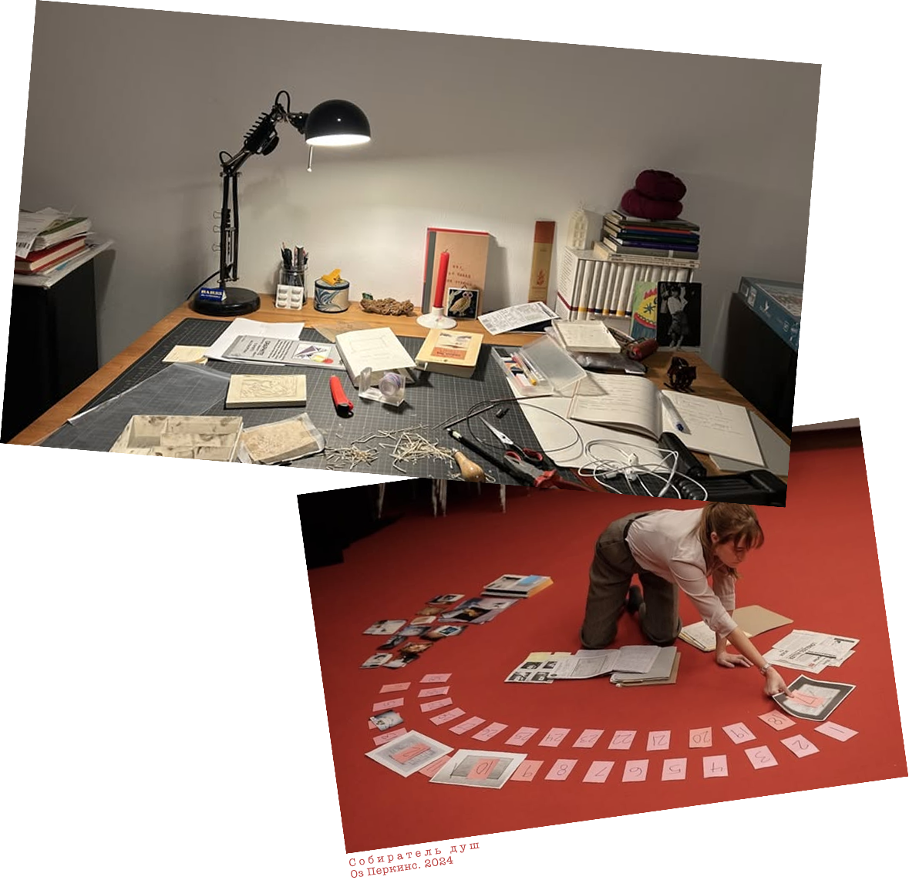
Началась сессионная неделя. Я почти не выхожу из дома, сплю по четыре часа и всё время чувствую, что забыла сделать что-то очень важное.
Сегодня утром посмотрела на список дедлайнов и сразу вспомнила «Собирателя душ». Там всё время есть ощущение, что что-то страшное уже рядом, просто ты пока не понимаешь, откуда оно придёт. Примерно так же я сейчас смотрю на календарь.
Каждый новый дедлайн появляется как очередная улика. Открываю ноутбук — ещё одна. Захожу в учебный чат — ещё две. Кажется, мой личный хоррор в этом месяце решили снять без маньяка. Достаточно было сессионной недели.
«Если дать понять, что что-то должно произойти,
и позволить этому постоянно нависать над героями,
зритель начнёт чувствовать то же самое».
— Оз Перкинс
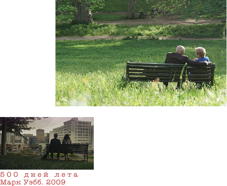
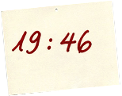
«500 дней лета» начинается с предупреждения о том, что это не история любви. И всё же почти весь фильм выглядит именно как она. Противоречие заложено в самом взгляде на эту историю. Том воспринимает отношения как фильм, сюжет которого ему уже известен. Отдельные моменты становятся доказательствами большой любви, а Саммер постепенно превращается из реального человека в героиню придуманной им истории.
Поэтому и 500 дней показаны не по порядку. Марк Уэбб объяснял такую структуру устройством памяти: отношения редко вспоминаются последовательно — прошлое возвращается отдельными сценами, ощущениями и деталями. Режиссёр не стремился сделать фильм ни сентиментальным, ни циничным. Он описывал его скорее как поп-песню, «под что можно танцевать».
Возможно, поэтому «500 дней лета» остаётся таким узнаваемым. Любовь в нём существует не как законченная история, а как коллекция моментов, которым память со временем сама придаёт значение.
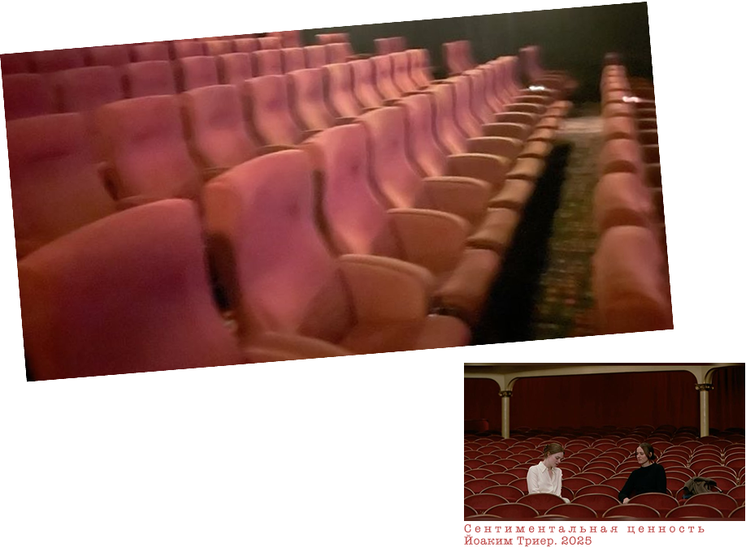
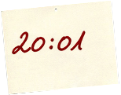
Больше всего меня зацепило то, как фильм говорит о семье через вещи, которые никто нормально не умеет проговаривать. Все любят друг друга, все друг друга ранят, а сказать об этом прямо гораздо сложнее, чем снять целый фильм.
И ещё дом. Он здесь как будто помнит семью лучше, чем сама семья. Одни и те же комнаты переживают детство, ссоры, смерти, возвращения. Меняются люди, свет за окнами, обои, а пространство всё это хранит.
Триер говорил, что хотел, чтобы зритель к концу фильма почувствовал возвращение в этот дом и его историю. Получилось. К финалу комнаты ощущаются родными.
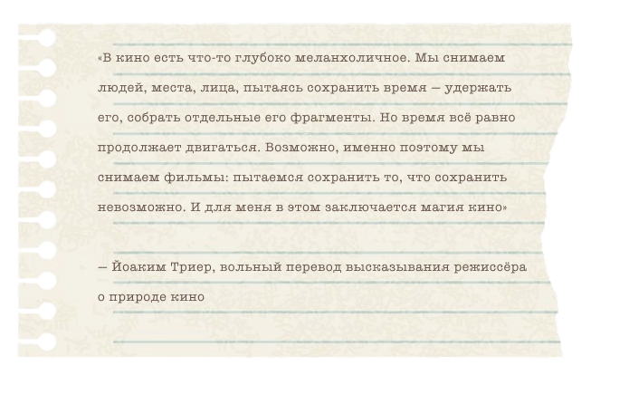
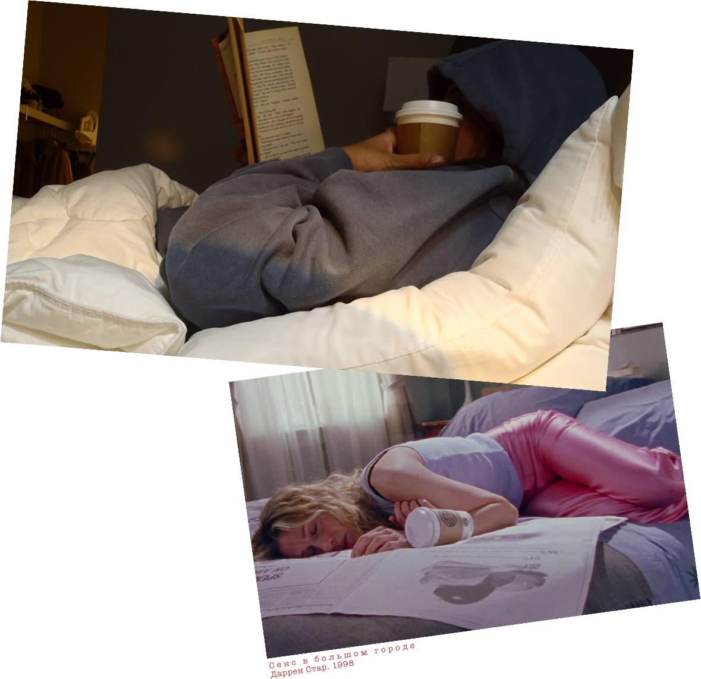
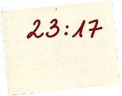
Каждый раз, когда смотрела «Секс в большом городе», мне казалось, что писать тексты — лучшая работа на свете. Кэрри сидит у окна с ноутбуком, курит, размышляет о любви, а потом каким-то образом из этого получается готовая колонка. Даже дедлайн у неё выглядит красиво.
Во время сессии я тоже постоянно сижу перед ноутбуком или книгами. Только вместо Манхэттена за окном у меня двадцать открытых вкладок и три недописанных работы.
В кино человек с ноутбуком всегда что-то создаёт. В жизни иногда он просто сорок минут смотрит на один абзац, переставляет два слова местами и идёт делать ещё один кофе.
Пожалуй, романтизировать учёбу гораздо проще, когда её не нужно сдавать завтра.
«Стремление к радости, лёгкость города, романтика,
возможность — всё то, что возникает, когда ты находишься
на пути открытия чего-то нового».
— Сара Джессика Паркер

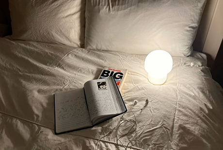
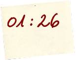
К вечеру ничего особенного так и не произошло. Новая чёлка, знакомые улицы, влюблённые в парке, кино, дедлайны и сон. Утром казалось, что стать main character значит сделать собственную жизнь интереснее. К вечеру оказалось, что менять особенно ничего и не пришлось.
Быть главным героем — не значит жить так, будто вокруг снимают кино. Скорее, перестать смотреть на собственную жизнь как на что-то, происходящее на фоне. Сегодня сюжет был самым обычным. Просто впервые хотелось досмотреть его до конца.
Тренд main character часто связывают с романтизацией повседневности, но его привлекательность не только в этом. Он предлагает сменить позицию наблюдателя на участника: обратить внимание на события, которые обычно остаются фоном. Для этого дню необязательно становиться похожим на фильм. Достаточно заметить, что сюжет уже происходит.